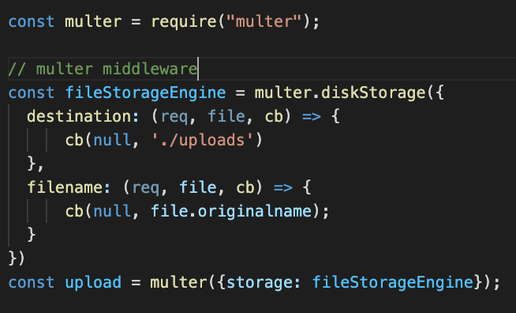
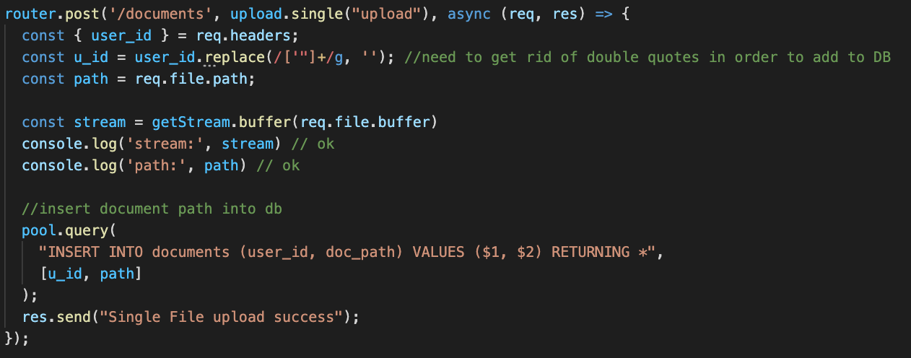
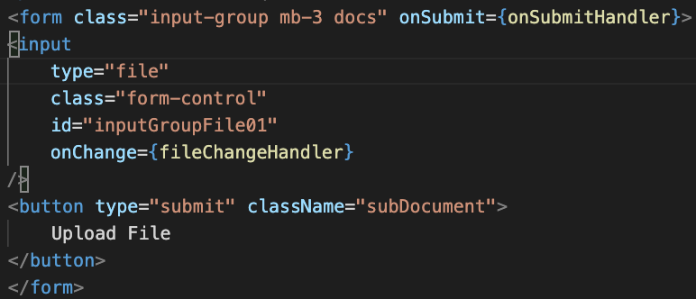
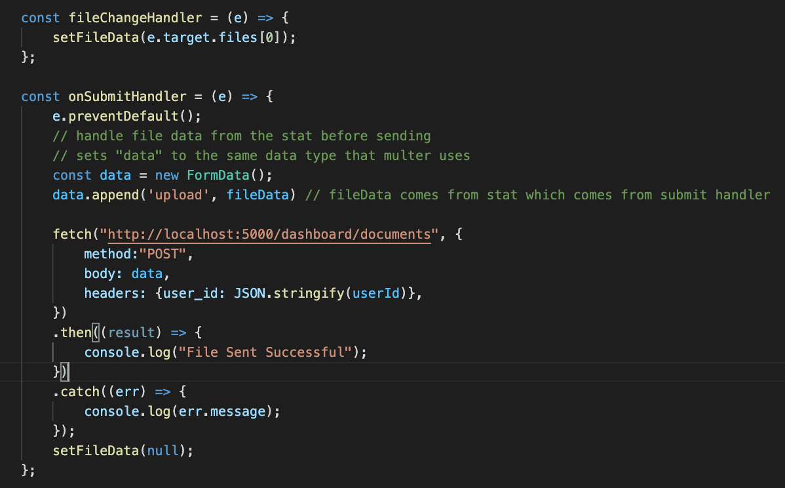

Material UI & Bootstrap
While I've learned that simple html and css suffice to create basic web pages. I became curious whether there are any additional resources
for already-developed elements of websites. While researching some industry standards and resources that are most widely used within UX,
I came across bootstrap and material UI.
The biggest difference between these resources is that Material UI is used in conjunction with react (which has also become industry standard),
while bootstrap can be used with just html. However both these two giants in the web development industry help developers design better websites
with great UI, excellent user experience, and responsive designs. They do this by offering previously styled web elements and classes for the developer
to make use of.
File Uploads
Many web applications allow users to upload files, usually tied to some sort of account. I decided to explore one option of how this can be accomplished
by creating a simple client/server project that stores files locally (in a folder) using multer. Multer is a node.js middleware primarily used for uploading files.

Setting up multer on the backend, you first tell it the destination, where you want it stored and a file name for each upload.

Since most applications will store files associated to its users, the above code is what an endpoint would look like if you were to store the
path to the file from "/uploads" with the users primary key. This design is probably not optimal for an actual service, you would instead want
to you some database that can store files or S3, but it will work for demonstrating multer. On to the front end...


when a file is uplaoded, the event handler sends the file data to the backend post endpoint as the same data type that multer can use.
WebDev Course Review
This semester I feel I've gained a much deeper understanding of web development and what it means to be a full stack developer.
However, I do think there were times where I could have gotten more out of the course. The readings provided each week were very
insightful and helpful for the labs done in class, when I read them. To be completely honest, since I was taking 4 CS classes which all
had some form of assesment from the readings, often times my WebDev readings had the lowest priority on my list of things to complete and wouldnt getting done.
Im not sure if making reading quizzes is the route to go here since the chapters really arent super long, this is something i noticed. I dont know if others experienced this,
perhaps this point has more to do with me than the course.
I think the best thing to take away from this course and what makes students more marketable is a deeper understanding of React, since this is used heavily in industry.
Now that there is a prereq for this course, I think this will help my point here and maybe the second year course should be centered around react. I felt that since we were introduced to React in the later half of the semester with less time,
our goal was to get functionality of our projects working with react, as opposed to truly understanding whats going on under the hood.